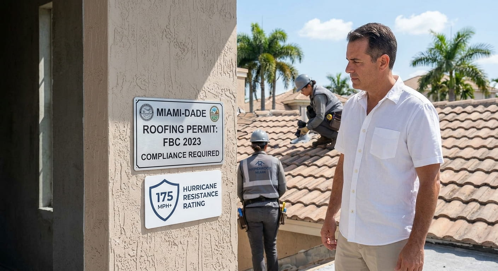

How Do I Know If I Need a New Roof in Miami?
Seeing a leak or a damaged roofing material does not automatically mean your entire roof needs to be replaced. The better question is whether the problem is isolated or whether it reflects a broader decline in the roofing system.
Miami homeowners also need to consider weather exposure, roof age, previous repairs and the condition of the materials beneath the visible surface. A replacement decision should therefore come from an inspection and a clear explanation of the roof's condition, not from one symptom alone.
Recurring leaks are a warning, not a diagnosis
A leak is one of the clearest reasons to investigate a roof, but the location of the interior stain does not necessarily identify the source. Water can travel through roofing layers before entering the living space.
If the same area repeatedly leaks after repairs, ask whether the underlying cause has been found. If leaks begin appearing in different parts of the property, a broader inspection becomes even more important.
Our guide on what to do when your roof starts leaking covers immediate steps, while our Miami inspection guide explains how to evaluate the bigger picture.
Widespread deterioration matters more than one damaged spot
Roof replacement becomes more likely when deterioration is spread across the system. Examples can include widespread damaged or failing materials, recurring problems in multiple areas, extensive storm damage or conditions beneath the roof covering that cannot be addressed effectively through small repairs.
The key is pattern. One damaged section may be repairable. Several independent problem areas can indicate that the roof is reaching a different stage of its service life.
Roof age should trigger an inspection
Age is useful context, but it is not a standalone replacement rule. Roofing materials have different characteristics, and actual performance depends on installation, maintenance, weather exposure and previous repairs.
Instead of asking only how many years are left, ask what condition the roof is in today. Our guide to roof lifespan in Miami explains why climate and installation matter.
Storm damage can change the decision
Hurricanes and severe storms can expose weaknesses that were not obvious before the event. Missing or displaced materials, damaged flashing, punctures and water intrusion should be documented and professionally evaluated.
A storm does not automatically justify replacement. The appropriate scope depends on the extent of damage and the condition of the rest of the system. Read our hurricane roof damage guide and our storm damage repair guide for more context.
Look at the roof as a complete system
A roof includes more than its visible outer covering. Underlayment, flashing, drainage, roof deck and other components can affect performance. During replacement, Florida's Hurricane Retrofit Guide recommends inspecting the roof deck and addressing damaged sheathing and fastening issues where appropriate.
This is why a replacement estimate should explain what is being done beneath and around the visible roofing material, not just list a product name.
When repair may still be the better choice
If the roof is relatively sound and the defect is clearly localized, repair may be the more sensible option. Examples can include isolated flashing problems, a small damaged area or another specific defect that can be corrected without compromising the rest of the system.
Homeowners should be wary of both extremes: replacing a roof unnecessarily and repeatedly patching a roof that is failing in several locations. The inspection should explain which situation you are actually facing.
Questions to ask before agreeing to replacement
Ask the contractor to identify the damaged areas, explain why repair is insufficient if replacement is recommended, and describe what the replacement scope includes. Ask whether permits apply, what materials are proposed and how unexpected deck or structural conditions would be handled.
For current local requirements, consult Miami-Dade County roofing permit information and the Florida Building Code.
Frequently asked questions
Does one roof leak mean I need a new roof?
No. A localized leak may be repairable. The condition of the rest of the roofing system determines whether replacement should be considered.
Is an old roof automatically a bad roof?
No. Age is important context, but inspection findings are more useful than age alone.
Should I replace my roof after every hurricane?
No. A professional assessment should determine whether damage is localized, widespread or part of a pre-existing condition.
The practical answer
If you are unsure whether your Miami roof needs replacement, do not start with a replacement contract. Start with an inspection, understand the findings, compare repair and replacement options, and ask what evidence supports the recommendation.
For more decision-making help, visit the Miami roofing resource center or learn about Miami roof replacement.
Sources and further reading
- Florida Hurricane Retrofit Guide — Re-Roofing
- Miami-Dade County — Roofing Permits
- Florida Building Code
Related Miami roofing guides
Miami roof repair · Replacement cost · Roof inspection · More roofing advice